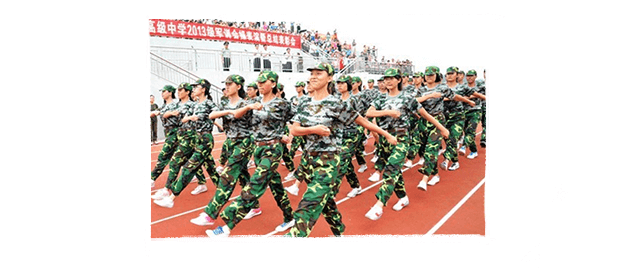
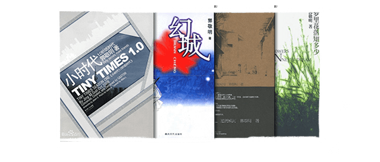
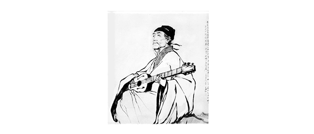
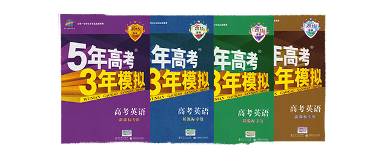
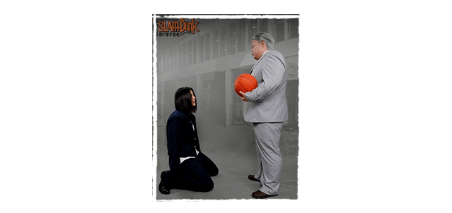
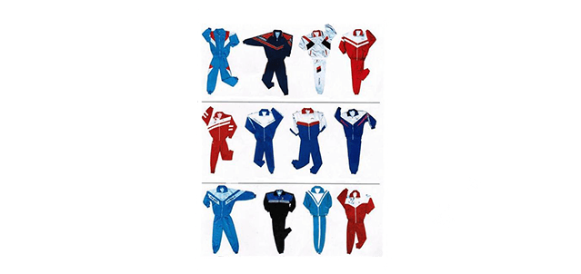
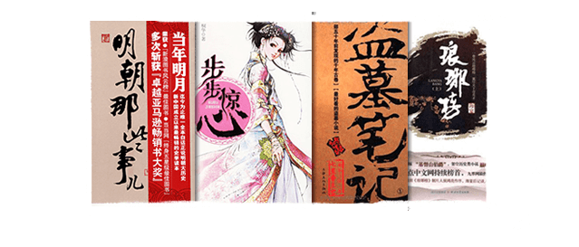

80后专场
（闭卷考试 总分：100分 得分60及格）
- 1、“你在橱窗前，凝视碑文的字眼，我却在旁静静欣赏你那张我深爱的脸”，出自周杰伦的哪首歌？（10分）
- A、《爱在西元前》
- B、《简单爱》
- C、《安静》
- D、《开不了口》
那年，周董还是“头低低先生”……

- 2、图中的这些同学在做什么？（10分）
- A、做早操
- B、暴走ing
- C、军训
- D、玩士兵cosplay
假如生命只剩一天，我愿在军训中度过（度日如年）

- 3、“林萧”是郭小四哪本小说里的人物？（10分）
- A、《梦里花落知多少》
- B、《小时代》
- C、《幻城》
- D、《悲伤逆流成河》
后排把小说藏在课本里的同学，说的就是你……

- 4、上图抱吉他的是历史课本里的谁？（10分）
- A、杜甫
- B、李白
- C、关汉卿
- D、辛弃疾
还记得红极一时的杜甫很忙吗……
- 5、哪部小说被改编成了电影？（10分）
- A、人生若只如初见
- B、左耳
- C、离歌
- D、鬼吹灯
你是因为小说才去看电影的吗……
- 6、上图表现的是高中生活的哪个场景？（10分）
- A、容嬷嬷监视紫薇和小燕子
- B、在校外偷窥的学生家长
- C、迟到了，被教务处主任逮个正着
- D、上课时，突然感到背后一阵凉意（班主任在看你呦）
每个班级，都有一个神出鬼没的班主任……

- 7、《高考英语》这本习题集的正确颜色是？（10分）
- A、褐色
- B、绿色
- C、紫色
- D、蓝色
看多了会做噩梦呦……

- 8、上图为《灌篮高手》cos剧照，其中右侧人物是？（10分）
- A、安东教练
- B、安西教练
- C、安北教练
- D、安南教练
篮球就是：男生一身臭汗，女生两眼放光……

- 9、对高中校服形容不正确的表述是?（10分）
- A、再难看也是回忆啊！
- B、丑爆了没有第二
- C、谁不穿要扣分
- D、时尚时尚最时尚
谁都有剪裤脚的岁月……

- 10、下面哪本小说是2005年以前在网络开始连载的？（10分）
- A、明朝那些事儿
- B、盗墓笔记
- C、步步惊心
- D、琅琊榜
网文的记忆从高中开始……